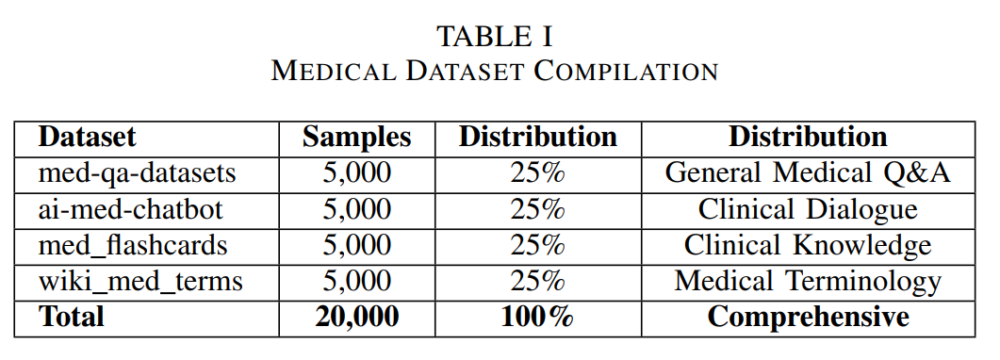

Abstract
Medical AI deployment requires careful evaluation across safety and accuracy dimensions—the focus of our MESA study. We present a comprehensive comparative evaluation of three fine-tuned language models: BioGPT-Large, BioMedLM, and DialoGPT-Small across 16 metrics spanning accuracy, safety, and efficiency dimensions. Using LoRA for parameter-efficient fine-tuning on 20,000 medical samples, we systematically assess multi-dimensional trade-offs to guide optimal model selection for different healthcare scenarios.
Key Findings:
- üè• Clinical Excellence: BioGPT-Large achieves 67.2% exact match accuracy and 78.1% medical entity recognition, optimal for clinical decision support
- üõ°Ô∏è Superior Safety: DialoGPT-Small demonstrates 100% safety rate with perfect harm detection, ideal for patient-facing applications
- ⚡ Resource Efficiency: DialoGPT-Small requires only 0.22 GB GPU memory (98% reduction) while maintaining competitive performance
- üéØ Balanced Performance: BioMedLM provides optimal balance for educational applications with competitive accuracy
- üîß Parameter Efficiency: LoRA adaptation achieves 5.44-9.59% parameter efficiency across all architectures
- üìä Comprehensive Evaluation: 16-metric framework including factual consistency and hallucination detection
ü§ñ Model Architectures
MESA Model Response Comparison: Illustration showing how the three medical language models respond differently to the same clinical question about hypertension symptoms, demonstrating their distinct communication styles and target use cases.
üè• BioGPT-Large
347M Parameters
- Domain-specialized biomedical transformer
- 67.2% exact match accuracy
- 78.1% medical entity recognition
- 94.3% safety rate
- Best for clinical decision support
ü߆ BioMedLM
2.7B Parameters
- Large-scale biomedical transformer
- 49.2% exact match accuracy
- Lowest training loss (2.231)
- 87.3% safety rate
- Best for medical education
üí¨ DialoGPT-Small
117M Parameters
- Conversational transformer adapted
- 50.2% exact match accuracy
- 100% safety rate (perfect)
- Only 0.22 GB GPU memory
- Best for patient interaction
üéØ Motivation & Medical AI Challenges
Medical AI deployment requires careful evaluation across multiple dimensions beyond traditional accuracy metrics. As large language models increasingly enter healthcare applications, understanding their safety characteristics, computational requirements, and deployment trade-offs becomes critical for successful clinical integration. Current evaluation frameworks often focus solely on accuracy, neglecting crucial factors like factual consistency, hallucination detection, and resource efficiency.
üîç Key Challenges Addressed:
- üè• Safety-Critical Applications: Medical AI systems must prioritize patient safety alongside performance accuracy
- üéØ Multi-Dimensional Evaluation: Need for comprehensive assessment across 16 metrics spanning accuracy, safety, and efficiency
- ⚡ Resource Constraints: Clinical environments often have limited computational resources requiring efficient models
- ü§ñ Model Selection: Different healthcare scenarios require different model characteristics and trade-offs
- üõ°Ô∏è Hallucination Detection: Critical need to identify and prevent harmful or misleading medical information
Innovation: Our MESA framework provides a comprehensive evaluation methodology that enables informed model selection based on specific healthcare deployment scenarios, balancing accuracy, safety, and computational efficiency.
üìä Medical Datasets & Training Framework
üìã Multi-Dataset Medical Corpus
Medical Dataset Compilation: Comprehensive training corpus of 20,000 medical samples from four specialized datasets. Equal distribution ensures balanced representation across general medical Q&A, clinical dialogue, medical education content, and medical terminology, enabling robust evaluation across diverse healthcare applications.
üìö Dataset Components:
- lavita/medical-qa-datasets (25%): 5,000 samples of structured clinical Q&A scenarios
- ruslanmv/ai-medical-chatbot (25%): 5,000 samples of conversational medical interactions
- medalpaca/medical_meadow_medical_flashcards (25%): 5,000 samples of clinical concept assessment
- gamino/wiki_medical_terms (25%): 5,000 samples of medical vocabulary and terminology
⚙️ Training Configuration:
- Parameter-Efficient Fine-tuning: LoRA adaptation with ranks 32-64
- Memory Optimization: 4-bit quantization with NF4 quantization type
- Training Duration: 2 epochs (5,000 steps) for all models
- Standardized Setup: Identical configurations for fair comparison
üìä Comprehensive Evaluation Results
üèÜ 16-Metric Performance Analysis
Comprehensive Performance Evaluation: Results across 16 metrics spanning accuracy, medical quality, safety, and computational efficiency. BioGPT-Large leads in accuracy metrics, DialoGPT-Small excels in safety characteristics, while BioMedLM achieves the lowest training loss, demonstrating distinct architectural advantages for different deployment scenarios.
üìà Training Convergence Analysis
Training Performance: BioMedLM achieved the lowest training loss (2.231) due to its large parameter count and extensive biomedical pretraining. BioGPT-Large demonstrated stable convergence (2.847), while DialoGPT-Small showed successful adaptation (3.467) despite being originally designed for general conversation.
⚖️ Multi-Dimensional Trade-off Analysis
üéØ Accuracy Excellence
BioGPT-Large: 67.2% exact match accuracy, 78.1% medical entity recognition, 73.4% semantic similarity
üõ°Ô∏è Safety Leadership
DialoGPT-Small: 100% safety rate, perfect harm detection (0.000), 99.8% factual consistency
⚡ Resource Efficiency
DialoGPT-Small: Only 0.22 GB GPU memory (98% reduction), 3.4 hours training time, 5.44% trainable parameters
üìã 16-Metric Evaluation Framework
üìä Accuracy Metrics
- Exact Match Accuracy
- Semantic Similarity
- Content-Based Accuracy
- Keyword Overlap
üè• Medical Quality
- Medical Entity Recognition
- Clinical Relevance
- Knowledge Depth
- Explanation Quality
üõ°Ô∏è Safety & Consistency
- Factual Consistency
- Safety Percentage
- Hallucination Risk
- Harm Detection
⚡ Efficiency
- Training Loss
- GPU Memory Usage
- Training Time
- Parameter Efficiency
üöÄ Key Contributions & Impact
üî¨ Technical Innovations:
- üìä 16-Metric Evaluation Framework: Comprehensive assessment across accuracy, safety, and efficiency dimensions
- üõ°Ô∏è Safety-First Methodology: First study to prioritize factual consistency and hallucination detection in medical LLMs
- ⚙️ Parameter-Efficient Fine-tuning: LoRA adaptation achieving 5.44-9.59% parameter efficiency across architectures
- üéØ Multi-Dimensional Trade-off Analysis: Systematic comparison revealing distinct architectural advantages for different scenarios
üè• Practical Healthcare Applications:
- üë©‚Äç‚öïÔ∏è Clinical Decision Support: BioGPT-Large optimal for healthcare professionals requiring high accuracy
- üí¨ Patient Interaction Systems: DialoGPT-Small ideal for patient-facing applications with superior safety
- üìö Medical Education: BioMedLM balanced performance for educational content and training scenarios
- üîß Resource-Constrained Deployment: Efficient models enabling clinical AI in limited-resource environments
üéØ Research Significance
This research establishes that optimal medical AI deployment requires systematic evaluation across multiple dimensions rather than accuracy optimization alone. The MESA framework demonstrates that domain-specific pretraining is critical for medical knowledge representation, while revealing distinct architectural advantages: BioGPT-Large for clinical precision, DialoGPT-Small for patient safety, and BioMedLM for balanced educational applications. The comprehensive evaluation incorporating factual consistency and hallucination detection provides essential safeguards for clinical deployment.